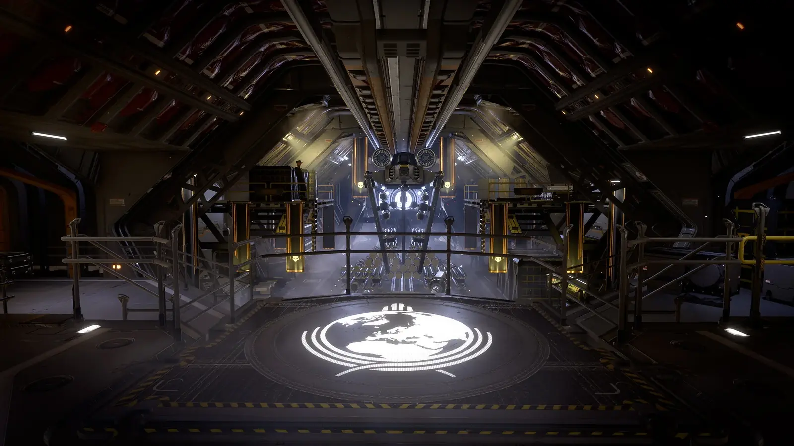
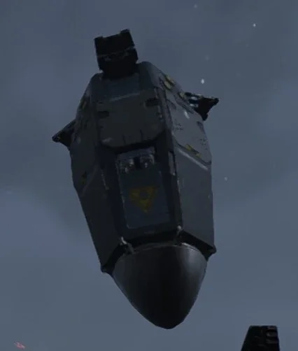
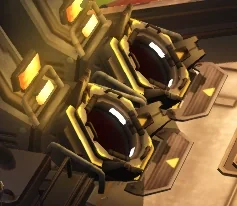

How the Hellpod works: annotated cross-sections, the drop sequence, every variant, with the facts kept apart from the claims.
Drawn from the game's own pod: faceted hull, nozzle head, side nozzles, the rounded nose that goes in first, doors that fold open. Green facts are the wiki's. Gold items are Ministry of Science claims and should be believed at the usual rate.
Support weapons, backpacks, the Resupply and the Hellbomb arrive in the same hull with a rack instead of a harness.
| Variant | Payload | How it opens | Field note |
|---|
Exosuits, the Fast Recon Vehicle and the Bastion are not Hellpod cargo. Pelican-1 lowers them on a magnetic clamp.
What happens in the seconds between the Ship Master's countdown and the doors blowing open.
Two columns. One of them is true.

